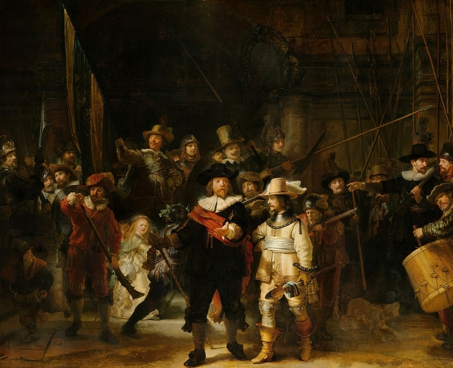

自畫像系列
林布蘭一生創作了大量的自畫像，約有80多幅，展示了他從年輕到老年時期的變化。這些自畫像不僅記錄了他的外貌變化，也揭示了他內心的情感波動。
群畫系列
這些畫作多數描繪市民團體、醫師學會或商會等重要人物，並以精湛的光影效果與細膩的情感刻畫，這些畫作讓觀眾得以一窺17世紀荷蘭的社會風貌。
-

巴洛克
荷蘭
17世紀 荷蘭黃金時代
《夜巡》 The Night Watch
林布蘭一生創作了大量的自畫像，約有80多幅，展示了他從年輕到老年時期的變化。這些自畫像不僅記錄了他的外貌變化，也揭示了他內心的情感波動。
這些畫作多數描繪市民團體、醫師學會或商會等重要人物，並以精湛的光影效果與細膩的情感刻畫，這些畫作讓觀眾得以一窺17世紀荷蘭的社會風貌。

美國哥德式

閱讀的女子

邁向身分認同

墨西哥牛仔
馬賽爾‧杜尚

茂登旅館

彈鋼琴的女人

神奈川衝浪裏

愛德華‧馬奈

印度坐佛

藍與綠的音樂

時間的凝滯
參觀資訊
提供美術館開館時間、門票價格的詳細資訊。
提供館內各展廳位置、設施和參觀動線，方便訪客規劃參觀路線。
列出參觀規則與無障礙設施，包括輪椅通道和輔助服務。
提供停車資訊、公共交通指南及鄰近餐飲選擇，讓訪客輕鬆安排行程。